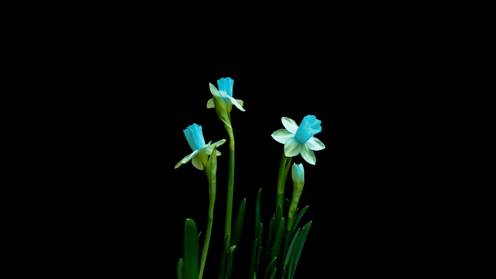
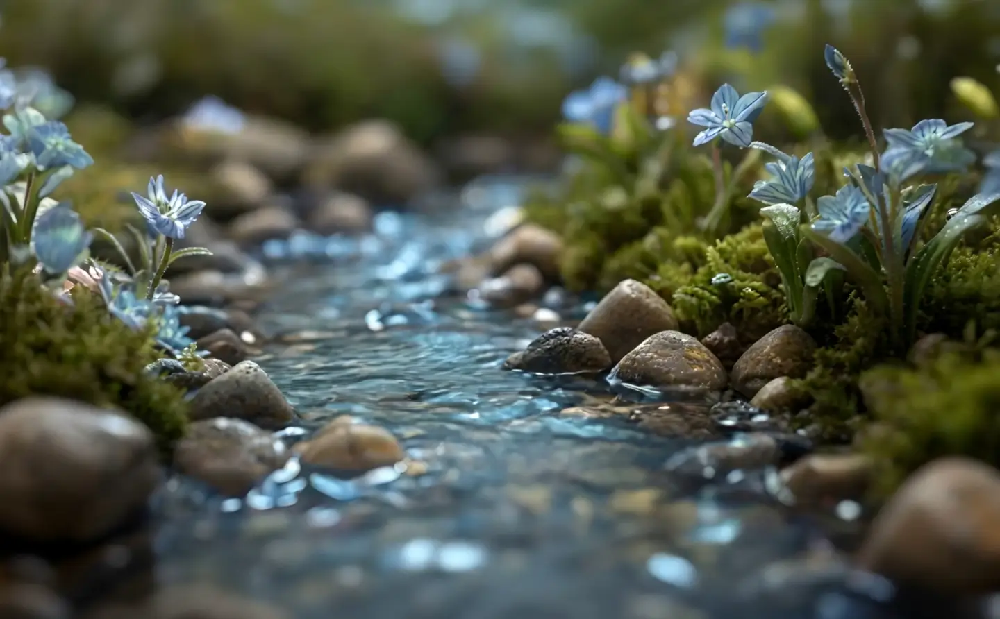
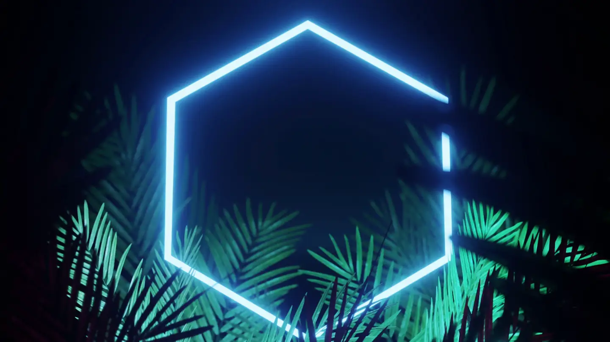
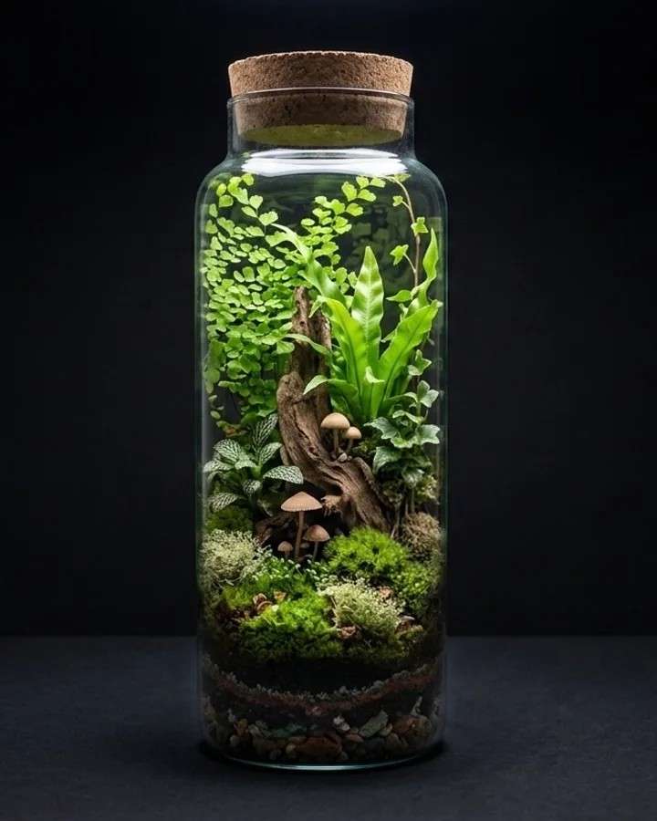
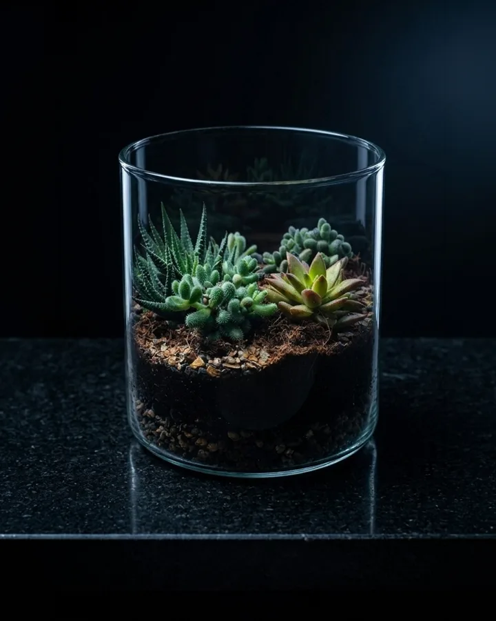
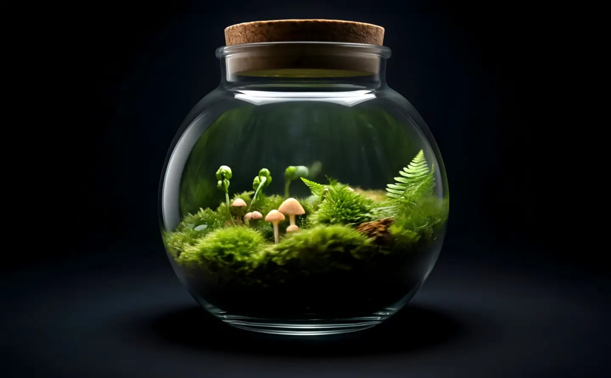
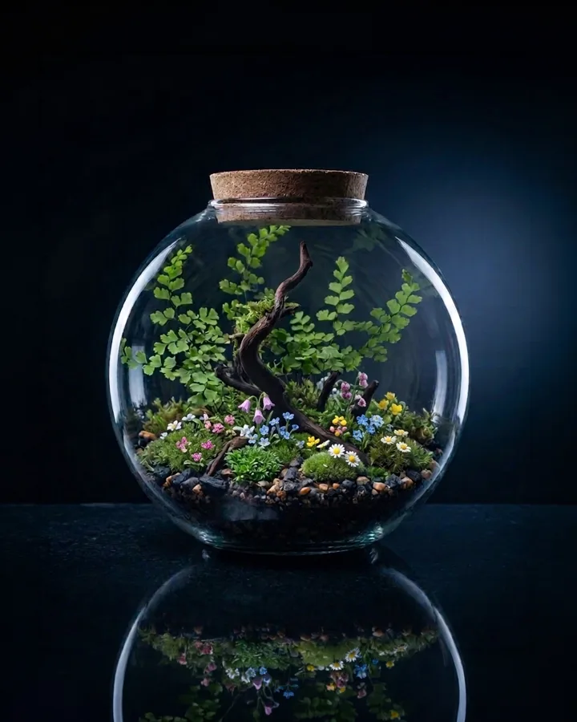

Plant Spotlight
Why moss is the perfect first tenant
No roots, no demands, a thousand shades of green. Meet the species that carries every world we build.
Read More →
How a corked jar rains on itself: condensation, capillary action, and why your terrarium hasn't needed you in three months.

No roots, no demands, a thousand shades of green. Meet the species that carries every world we build.
Read More →
Backlight, halo or window sill? Three ways to stage glass so the forest inside does the talking.
Read More →
Morning fog on the glass means the cycle is alive. Here's how to read what your world is telling you.
Read More →
Desert or rainforest? The one decision that determines everything about how your terrarium lives.
Read More →
A tiny hiker changes the scale of everything. How one figure turns a planted jar into a narrative.
Read More →
Daisies and forget-me-nots in a sealed sphere — the alpine species that bloom happily behind glass.
Read More →